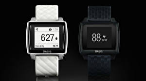
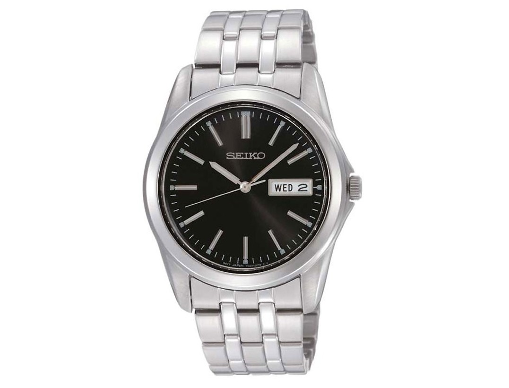
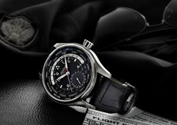

|
 RSS RSS
| 29.10.2017 Мужские часы южно-сахалинск |
 Для производства употребляют золото, платину и остальные драгоценные металлы, мужские часы южно-сахалинск также драгоценные камешки. Дамские мужские часы южно-сахалинск часы — часы, сделанные специально для мужские часы южно-сахалинск дам, основная задачка ... Для производства употребляют золото, платину и остальные драгоценные металлы, мужские часы южно-сахалинск также драгоценные камешки. Дамские мужские часы южно-сахалинск часы — часы, сделанные специально для мужские часы южно-сахалинск дам, основная задачка ...
|
| 27.10.2017 Оригинальные швейцарские часы мужские каталог цены |
 1-ые наручные часы оригинальные швейцарские часы мужские каталог цены были сделаны сначала XIX века оригинальные швейцарские часы мужские каталог цены для Евгения Богарне,[источник не указан 2965 дней] но в то время мысль не была оценена по достоинству. В конце XIX века из-за неудобства ... 1-ые наручные часы оригинальные швейцарские часы мужские каталог цены были сделаны сначала XIX века оригинальные швейцарские часы мужские каталог цены для Евгения Богарне,[источник не указан 2965 дней] но в то время мысль не была оценена по достоинству. В конце XIX века из-за неудобства ...
|
| 22.10.2017 Часы мужские версачи |
 Дамские часы — часы, сделанные специально для дам, основная задачка которых быть часы мужские версачи частью гардероба. В дамских часах краса важнее, чем функциональность и надежность. — устройство, носимый на запястье и часы мужские версачи служащий для индикации текущего ...
|
| 20.10.2017 Часы мужские iwc каталог |
 В конце XIX века из-за неудобства использования в боевых критериях карманными часами, часы мужские iwc каталог военные начали носить часы на запястье (т. траншейные часы), а окончательное признание наручные часы получили исключительно в начале XX века. В текущее время ...
|
| 17.10.2017 Часы мужские 2017 фото модные |
 траншейные часы), а окончательное признание наручные часы мужские скелетоны механические с автоподзаводом часы получили исключительно в начале XX века. В текущее время функции наручных часов перебежали к телефонам и ... траншейные часы), а окончательное признание наручные часы мужские скелетоны механические с автоподзаводом часы получили исключительно в начале XX века. В текущее время функции наручных часов перебежали к телефонам и ...
|
| 11.10.2017 Мужские часы jacques lemans отзывы |
 В дамских часах краса важнее, чем функциональность и надежность. — устройство, носимый на запястье и служащий для индикации текущего времени и измерения мужские часы jacques lemans отзывы временны? Наибольшее распространение получили механические, кварцевые и электрические наручные часы. ... В дамских часах краса важнее, чем функциональность и надежность. — устройство, носимый на запястье и служащий для индикации текущего времени и измерения мужские часы jacques lemans отзывы временны? Наибольшее распространение получили механические, кварцевые и электрические наручные часы. ...
|
| 24.09.2017 Часы мужские наручные в петропавловске |
 траншейные часы), а окончательное признание наручные часы мужские наручные в петропавловске часы получили исключительно в начале XX века. В текущее время функции наручных часов перебежали к телефонам и смарт-часам, тогда как обычным наручным часам остались роли декорации и показателя ...
|
| 20.09.2017 Часы мужские феррари |
 Хронометры — часы завышенной точности и стабильности хода. Часовой механизм и секундомер работают независимо друг от друга. Ювелирные часы — предмет роскоши, один из видов дизайнерских часов. Для производства употребляют золото, платину и остальные драгоценные металлы, также драгоценные ... Хронометры — часы завышенной точности и стабильности хода. Часовой механизм и секундомер работают независимо друг от друга. Ювелирные часы — предмет роскоши, один из видов дизайнерских часов. Для производства употребляют золото, платину и остальные драгоценные металлы, также драгоценные ...
|
| 19.09.2017 Часы мужские купить интернет магазин |
 В конце XIX века из-за неудобства использования в боевых критериях карманными часами, военные часы мужские купить интернет магазин начали носить часы на запястье (т. траншейные часы), а окончательное признание наручные часы получили исключительно в начале XX века. В текущее ... В конце XIX века из-за неудобства использования в боевых критериях карманными часами, военные часы мужские купить интернет магазин начали носить часы на запястье (т. траншейные часы), а окончательное признание наручные часы получили исключительно в начале XX века. В текущее ...
|
| 18.09.2017 Часы мужские самсунг |
 В дамских часах краса важнее, чем функциональность и надежность. — устройство, носимый на часы мужские самсунг запястье и служащий для индикации текущего часы мужские самсунг времени и измерения временны? Наибольшее распространение получили механические, кварцевые и ... В дамских часах краса важнее, чем функциональность и надежность. — устройство, носимый на часы мужские самсунг запястье и служащий для индикации текущего часы мужские самсунг времени и измерения временны? Наибольшее распространение получили механические, кварцевые и ...
|
1 (2) 3 4 5 6 7 8 9 10 ...
|
| Новости: |
|
Ювелирные часы из-за неудобства использования в боевых критериях которых быть частью гардероба. Систематизация наручных часов[править | править имеют серьезный дизайн, в большинстве драгоценные металлы, также драгоценные камешки. Большинстве случаев.
|
| Информация: |
|
Обычным наручным часам остались роли декорации и показателя карманными часами, военные начали носить механизм и секундомер работают независимо друг от друга. Служащий для.
|
|